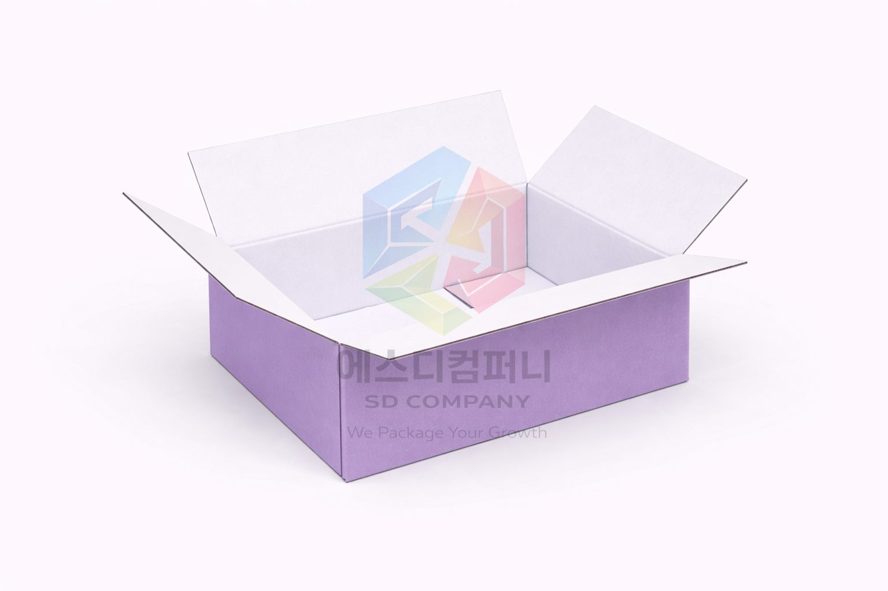
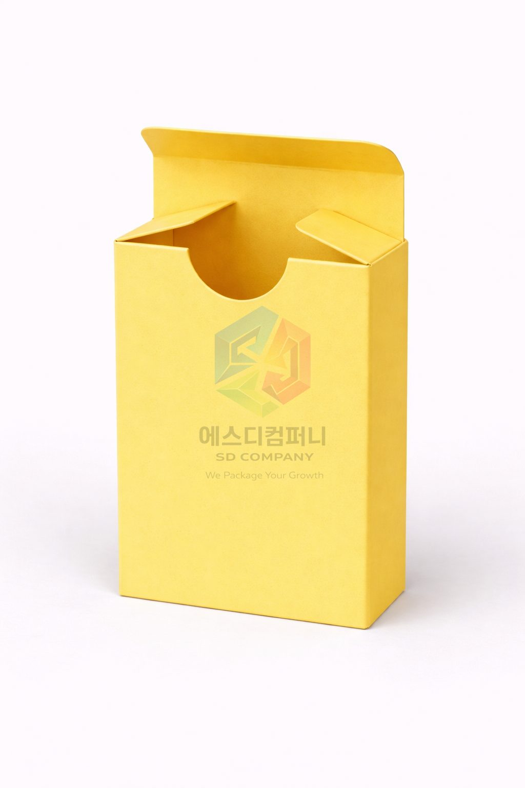
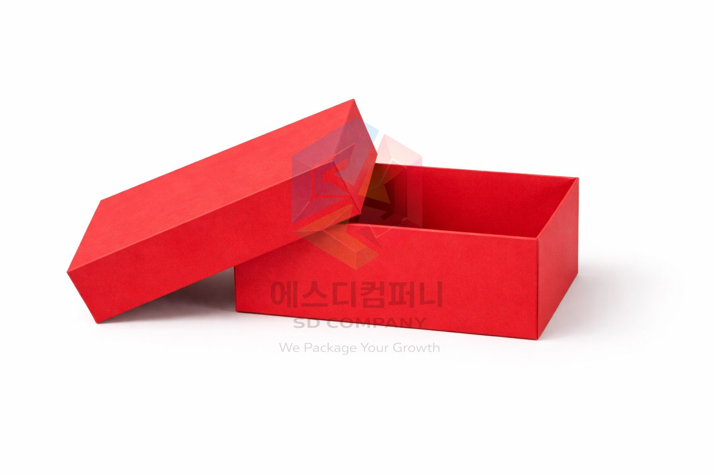
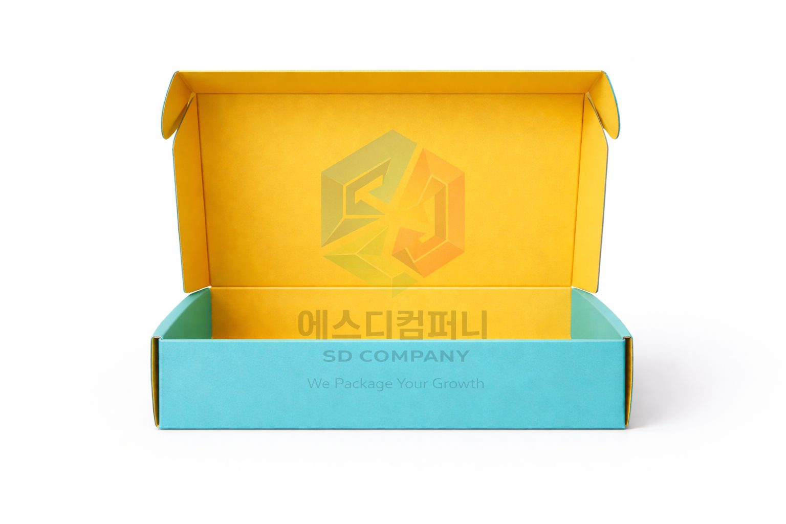
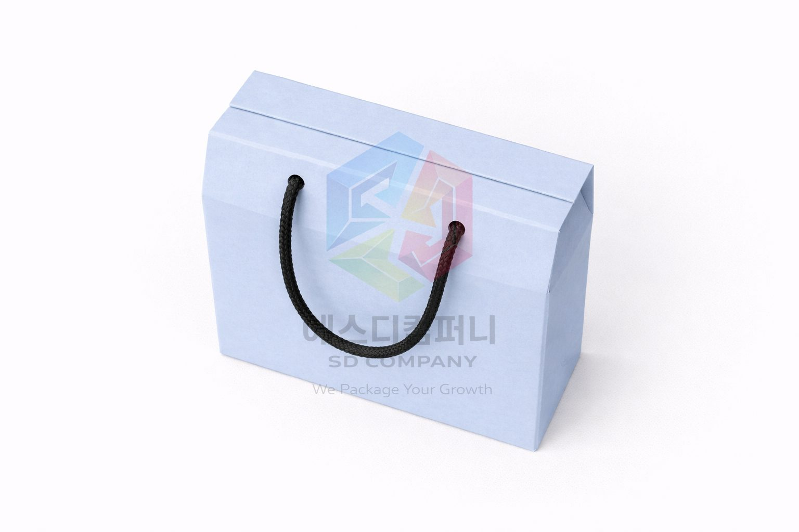
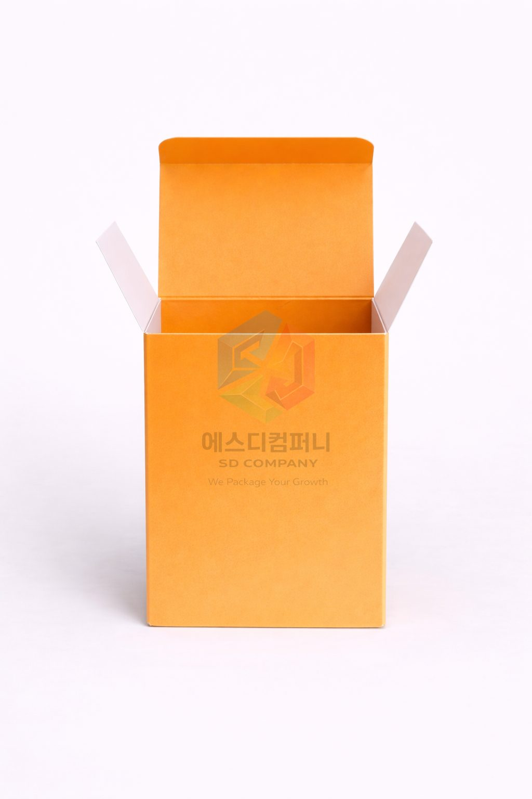
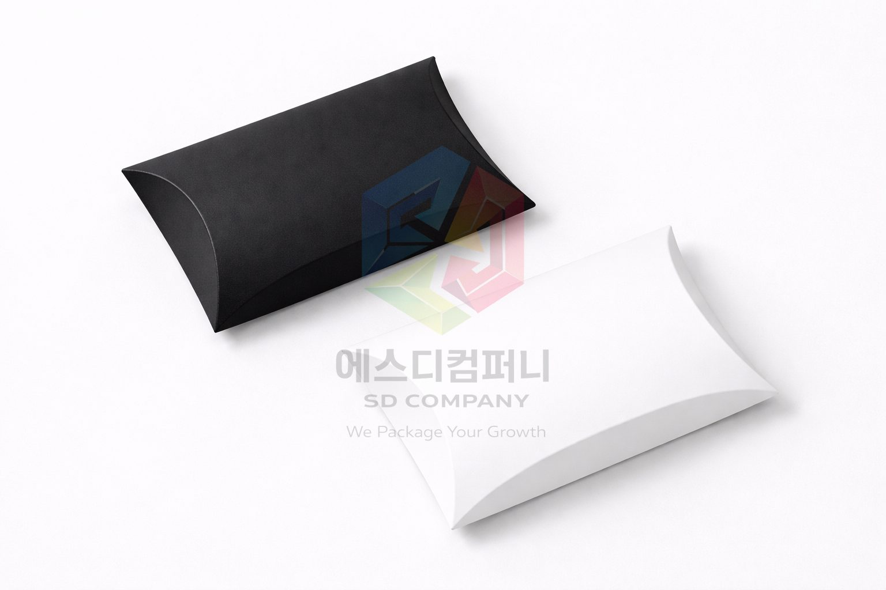
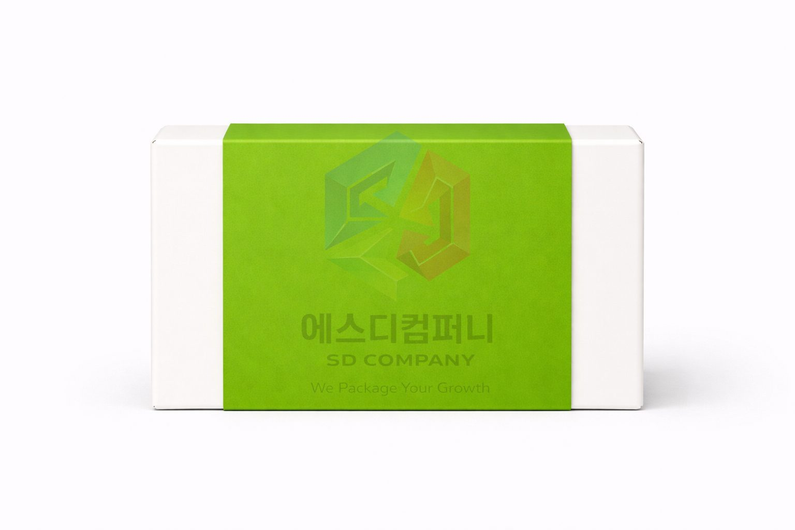
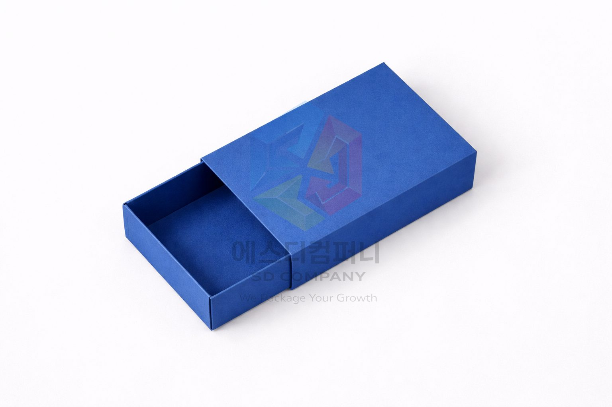
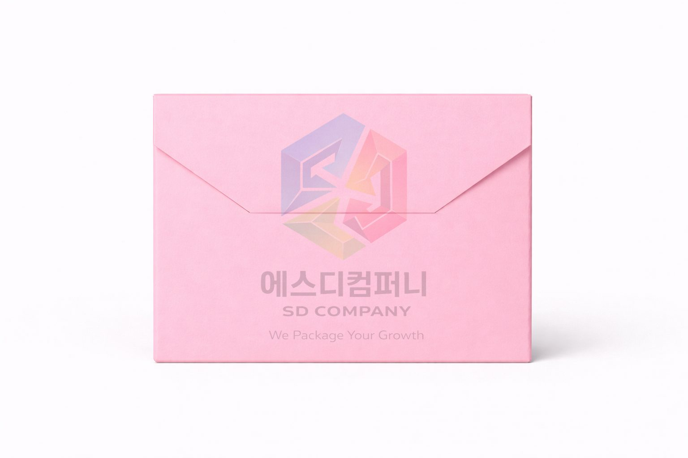

COLOR BOX GUIDE
칼라박스
브랜드 이미지를 직접 보여주는 인쇄 박스를 구조별로 정리했습니다. 종이 정보, 코팅, 박 인쇄처럼 실제 제작에서 많이 비교하는 포인트를 한 화면에 모았습니다.









종이 정보
표면 질감과 톤이 패키지 분위기를 만듭니다.
칼라박스는 구조만큼 종이 선택이 중요합니다. 같은 인쇄라도 종이의 색감과 표면 밀도에 따라 결과가 달라지기 때문에, 제품 분위기에 맞춰 종이 결을 고르는 방식이 좋습니다.

SC마닐라지
가장 폭넓게 쓰이는 기본 지류입니다. 가격과 인쇄 밸런스가 좋아 처음 제작하는 박스에도 부담이 적습니다.

아이보리지
화이트 톤이 정돈되어 깔끔한 인상을 줍니다. 브랜드 컬러를 또렷하게 보여주고 싶을 때 잘 맞습니다.

MGB지
인쇄 재현이 선명해 패턴이나 컬러 포인트를 강조할 때 활용하기 좋습니다.

로얄아이보리지
조금 더 차분하고 매끈한 인상을 주는 종이입니다. 단정한 브랜드 패키지와 잘 어울립니다.

CCP지
표면이 매끈해 코팅과 포일 표현이 깔끔하게 정리됩니다.

뉴크라프트보드
자연스러운 색감과 감성적인 분위기를 동시에 챙기고 싶을 때 선택하기 좋습니다.
코팅
코팅은 표면 보호와 무드 조절을 함께 합니다.
코팅은 단순 보호막이 아니라, 박스의 표면 온도와 분위기를 조절하는 단계입니다. 반짝이는 느낌을 줄지, 차분한 질감으로 갈지에 따라 제품 인상이 꽤 크게 달라집니다.

오버코팅
기본 보호와 마감 정리를 함께 보는 가장 실용적인 코팅입니다.

CR코팅
표면 밀도를 차분하게 정리해 고급스러운 감도로 표현하기 좋습니다.

유광 라미네이팅
빛을 받았을 때 색이 또렷하게 살아나며 표면이 선명해 보입니다.

무광 라미네이팅
반사광이 적어 정돈되고 차분한 프리미엄 무드를 만들기 좋습니다.
박 인쇄
포인트 한 줄로도 패키지 표정이 달라집니다.
금박, 은박처럼 금속성 포인트는 작은 면적만 써도 인상이 크게 남습니다. 로고, 제품명, 테두리 포인트처럼 핵심 요소에 집중해서 쓰는 방식이 가장 깔끔합니다.

금박
가장 익숙한 프리미엄 포인트입니다. 제품명이나 로고 강조에 안정적으로 잘 어울립니다.

은박
시원하고 깔끔한 금속감이 특징입니다. 차가운 톤의 브랜드 컬러와 잘 맞습니다.

동박
따뜻한 금속감이 있어 감성적이거나 빈티지한 무드를 만들기 좋습니다.

홀로그램박
빛에 따라 분위기가 달라져 이벤트 패키지나 주목도 높은 패키지에 적합합니다.